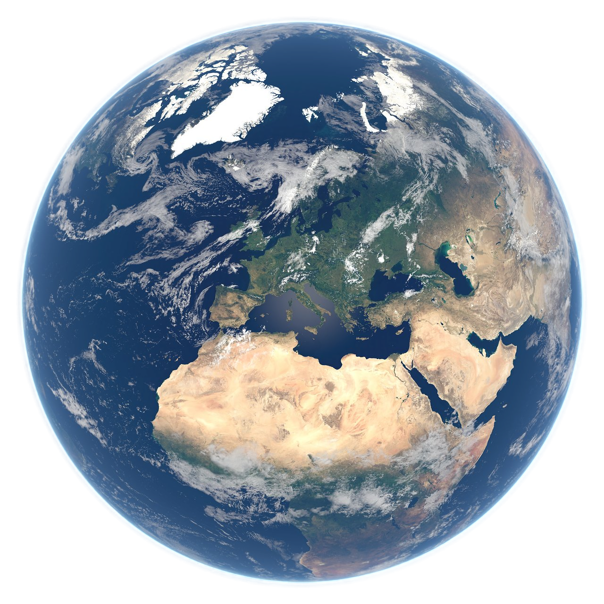
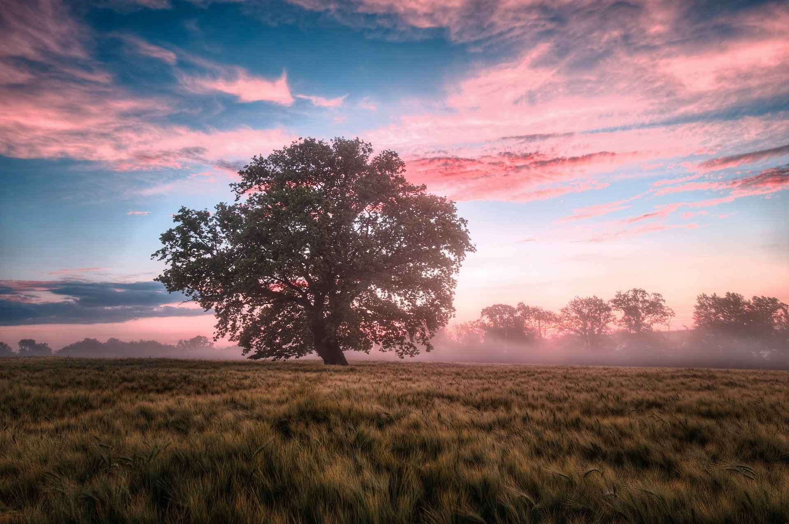
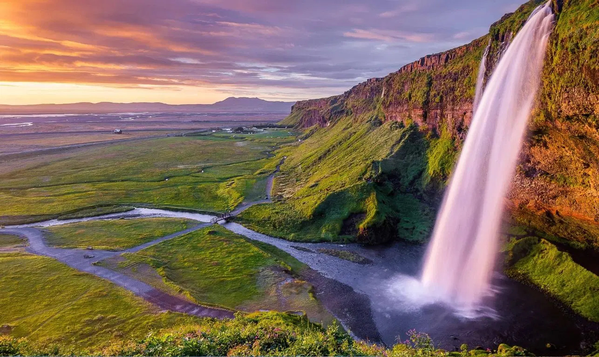

Earth's rock cycle, driven by tectonic plate movements, constantly recycles material, transforming igneous, sedimentary, and metamorphic rocks over time.

Earth’s water makes life possible by regulating climate, supporting ecosystems, and serving as the essential foundation for all living organisms. The vast oceans, covering 70% of the planet, are crucial for regulating climate and supporting diverse ecosystems.